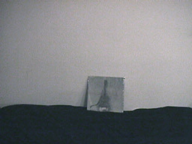

|
![[Not Hunting for Meaning]](images/covers/thumb-0797.jpg)
Not Hunting for Meaning
(new studio release)
![[Helsinki Saturday]](images/covers/thumb-0796.jpg)
Helsinki Saturday
(new live release)
![[Hasselt Saturday]](images/covers/thumb-0795.jpg)
Hasselt Saturday
(new live release)
![[Skirting the Edge]](images/covers/thumb-0794.jpg)
Skirting the Edge
(new studio release)
![[London Tuesday]](images/covers/thumb-0793.jpg)
London Tuesday
(new live release, also on DVD)
![[Glasgow Sunday 2005]](images/covers/thumb-0792.jpg)
Glasgow Sunday 2005
(now on DVD)
![[Glasgow Friday]](images/covers/thumb-0791.jpg)
Glasgow Friday
(now on DVD)
![[Brooklyn Wednesday]](images/covers/thumb-0789.jpg)
Brooklyn Wednesday
(now on DVD)
|
Everybody knows one thing about Jandek, that nobody knows anything
about Jandek. There is nothing but the music. Some find it
offputting or unlistenable at first, but to open ears it reveals
great depth, breadth, intelligence, feeling, and rewards for the listener.
To learn more, read the About Jandek
section.
Please send corrections and additions for the site to me by email
or to 8A Leonard Ave, Cambridge MA 02139 (note new address effective
September 1, 2009).
Ordering info
See the Ordering section.
Booking info
Corwood has a post office box and a phone book entry.
Acknowledgments
WHPK’s archive of all the Jandek LP’s made this site
initially possible.
Josh Ronsen, Gerard Klauder, and Steve Silverstein were
instrumental to the early growth of the site.
Gerard Klauder, Ryan Hildebrand, Josh Ronsen, Brad Emrich, Danen
Jobe, Derek Perdue, Christina Carter, Nate Reilly, Paul Goguen, Jamie
Morrison, Andrew Heathwaite, Chris Woodward, Paul Condon, Paul
Frederick, Ivan Shiel, Nicholas Hennies, Joe Henry, Shaun Brennan,
B. Jason Ouellette, Gavin Brownrigg, Thomas Schmidt, Nate Wilson,
Lauren Ciechanowski, Marshy, Shervin Fatehi, Ross Morris,
Greg Farough, and an anonymous
contributor with a Houston postmark all transcribed at least one
album’s worth of lyrics.
Jason Bastek, Rob Pleshar, Jack at Flipped Out, Frank van den
Elzen, Jason Young, Ray Carmen, Andrew Russ, Henry Weld, David
Willems, Chris Woodward, Derek Monypeny, Brad Emrich, Ross Beach, Ben
Londa, Jeremy Pisani, Aaron Russell, Kristopher Handley, Irwin Chusid,
Mike Brooker, sam@seanet.com, Mark Wolov, nevermor@mhonline.net,
Francis Heaney, Daniel Marks, Joe Henry, Alec Way, Erik Johnson,
William Crain, Tom Nondorf, David Winn, Phylo Brag, Jordan Geiger,
Dale Collins, Christopher Petkus, Todd Lintner, Ed Reno, Andrew
Hamlin, electricsound@hotmail.com, Mark Fenton, Eric Schlittler, Jason
Cooley, Fabio Russo, Darin Mitchell, Gregg Luvoxx, Pierre Sandgren,
Zwie Zuba, Chris Morten, Charles Gillett, David Tibet, Barry Esson,
Bryony McIntyre, Alan Cummings, Markku
Selin, Ross Em, Brendan Collins, Allen Rendel, Andrew Necci,
Ian Hill, Gregg Turek, Kevin Gilmartin,
Marc Masters, Evan Patterson, Jason Archer, David P, Pete Toalson,
Jouni Luoma, Markus Metsala, Ludo Maas, Antoine Duluard,
Brian Krakow, Maurice Rickard, Jonathan Lee, Joe Gerdeman,
Louis Shepherd, Adam Sampson, Glyn Rogers, Simon Ballard,
Nigel Bryant, Kieron Tyler, Simon Greenwood, Lee Rosevere,
Gavin, Leila Tapaninen, Nancy Novotny, Isaac Slusarenko,
J. Martin, Andrew Morgan, Doug Elder, Alimarea Vasquez,
Brian Johnson, Jason Polland, Alexander Pangrac,
Limbless Records, Robert Ham, Liz Harris, Dale Cornish,
Thomas Schmidt, Richard Rees-Jones, Danny Saul,
Alex Neilson, Gavin Brownrigg, Michael Goldman,
Matthew Cowley, Joey Minutillo, Gary Topp,
Joshua Harris, Stacie Slotnick, Alan Licht,
Nate Wilson, Iris Short, Michaël P,
Shervin Fatehi, Rick Hall, Marshy, Lars Spurious, Chris O’Dwyer,
Brent Rioux, John Hutchinson, Sheena Malone, Scott Bateman,
Tim Strange, Raymond Jow, John Reeves, Jonathan Gean,
Brad Swafford, David Allan,
and others I’m forgetting
supplied miscellaneous pieces of information or lyrics.
Thanks to Keiko Cummings, Andrew Hood, Heather Leigh Murray, Andria
Tibet, Billy Stines, John Kilbride, J. Martin, Matt Cotsell, Danny
Saul, Chad Radford, Gary Topp, Joshua Harris, and John Pham for
permission to use photos.
Thanks to Corwood Industries for keeping me supplied with
discs, and for the music.
- 19 Aug 2011: added lyrics for “Jaws of Murmur”
(thank you nofxfonofx)
- 17 Dec 2009: noted the release of What Was Out There Disappeared
and Camber Sands Sunday (details to come)
- 5 Nov 2009: added poster images for Vancouver and Victoria
shows
- 3 Nov 2009: added upcoming Baltimore and Victoria shows;
filled in some personnel details for past shows;
split live page into two separate pages
- 8 Sep 2009: added item about studio session to be broadcast
on WNYU tomorrow
- 6 Sep 2009: added Nashville and Vancouver shows;
mention that Portland Thursday is out
- 5 Sep 2009: added details on Brooklyn show tomorrow
- 20 Aug 2009: I have a new mailing address (was Boston, now Cambridge)
- 4 Aug 2009: added New Orleans show from March
- 23 Jul 2009: linked to Hasselt Saturday lyrics
(thank you Greg Farough)
- 20 Jul 2009: added Brooklyn show in September
- 19 Jul 2009: added Tilburg show coming in September
- 18 Jul 2009: added free in-store performance in Belfast
- 17 Jul 2009: added Glasgow Sunday 2005 lyrics
(thank you Ross Morris)
- 14 Jul 2009: linked to official page for Vienna show
and listed backing musicians
- 12 Jul 2009: added Washington D.C. show in September;
filled in personnel for April 2009 Manhattan show
- 10 Jul 2009: added New York show in April
- 7 Jul 2009: added upcoming Vienna show
- 6 Jul 2009: added new studio album Not Hunting for Meaning,
new live albums Hasselt Saturday and Helsinki Saturday, and
four more DVD releases; updated ordering page; added basic information on
past and future live appearances
- 29 Jan 2009: Chapel Hill show announced; Skirting the Edge
and London Tuesday now available
- 16 Oct 2008: Portugal show announced
- 7 Oct 2008: Gainesville lineup announced; tickets on sale
- 5 Oct 2008: Gainesville show announced
- 19 Aug 2008: added new release
Glasgow Sunday 2005
- 26 Jul 2008: filled in lineup details on recent shows
- 23 Jul 2008: noted reissue of Ready for the House on vinyl;
added Glasgow Friday lyrics (thank you Shervin Fatehi)
- 15 Jul 2008: Columbus show announced
- 19 Jun 2008: a second London show took place
(only announced a few days ahead of time)
- 5 May 2008: Denver show announced; added new release
Glasgow Friday;
Manhattan Tuesday is now out on DVD
- 8 Apr 2008: added more details on Philadelphia and Ann
Arbor shows; Dublin show announced
- 9 Feb 2008: added new release
The Myth of Blue Icicles
(including lyrics; thank you Nate Wilson)
- 23 Jan 2008: added upcoming concert in Philadelphia
- 22 Jan 2008: added upcoming concerts in Austin and Ann Arbor
- 27 Oct 2007: Austin Sunday is now out on DVD
- 17 Oct 2007: put ordering info on a separate page;
added Brooklyn Wednesday lyrics
(thank you Lauren Ciechanowski and Marshy)
- 16 Oct 2007: Jandek plays San Francisco
in January; added more info about Grinnell show
- 12 Oct 2007: Brooklyn Wednesday is out
as a 4-CD set and Glasgow Monday is out on DVD;
there was a concert last week in Grinnell, Iowa; two
concerts are scheduled in November in the Netherlands
and Denmark
- 20 Jun 2007: many small updates and additions to the About
section and Discography section, mostly observations and speculation
about who sings and plays on which LP-era recordings
- 13 Jun 2007: linked to more Boston photos
- 12 Jun 2007: lineup info for Montreal and Fort Worth
announced; also added more Boston show links
- 10 Jun 2007: added more Boston show links, plus photos
- 9 Jun 2007: added pre-show press and some initial post-show
reactions for Boston show
- 1 Jun 2007: linked to some photos
from Hasselt show; linked to Aaron Goldberg’s
piece
for Perfect Sound Forever reviewing the first 42 Jandek albums and included
quotes from all of his reviews on the discography page
- 25 May 2007: the location of the cover photo for The Place has been positively
identified as Chester, England
- 18 May 2007: Fort Worth show announced for July
- 7 May 2007:
Manhattan Tuesday
is now out (added lyrics; thank you Nate Wilson);
updated Corwood catalog scan
- 23 Apr 2007: some edits and additions to the About Jandek
page making it somewhat less out of date
- 12 Apr 2007: new drummer for NYC show is
Pete Nolan; added news item about upcoming screening of Portland
footage
- 11 Apr 2007: added forthcoming
Manhattan Tuesday 2CD
- 10 Apr 2007: Boston show announced for June 8
- 4 Apr 2007: added date for Montreal show (June 24)
- 31 Mar 2007: Montreal show announced for June
- 2 Feb 2007: Manhattan show announced for April
- 1 Feb 2007: Austin show announced for March
- 30 Jan 2007: added photos from Indianapolis show
(thank you Joshua Harris)
- 22 Jan 2007: added still from forthcoming live
DVD of Toronto show (thank you Gary Topp)
- 21 Jan 2007: added scan of current Corwood catalog
- 20 Jan 2007: updated info on upcoming shows
- 22 Dec 2006: added new release
The Ruins of Adventure
(including lyrics; thank you Danen Jobe)
- 15 Dec 2006: Richmond show announced; added
information and reports from Indianapolis show
- 15 Nov 2006: Newcastle Sunday
now available on DVD
- 7 Nov 2006: Austin Sunday is now out
(added lyrics; thank you Danen Jobe); Atlanta show announced
for Feb; added some details on Seattle show
- 16 Oct 2006: photos from Chicago show (thank you Chad Radford)
- 21 Sep 2006: some details on Chicago show
- 18 Sep 2006: added Indianapolis show; first reports
from Toronto; added forthcoming Austin Sunday release
- 24 Aug 2006: added link to Seattle ticket info;
expanded the discussion near the top of the About Jandek
page of how to refer to Jandek/Corwood
- 23 Aug 2006: added lyrics for Glasgow Monday
(thank you Danen Jobe and Jonathan Lee)
- 18 Aug 2006: Seattle show announced
- 31 Jul 2006: further updates reflecting upcoming
shows and recent releases
- 19 Jul 2006: mention Chicago show and new Glasgow
Monday release
- 24 Jun 2006: more details on the DVD
- 15 Jun 2006: Glasgow Sunday DVD out;
Toronto show announced
- 20 May 2006: added photos from Bristol and Camber
- 19 May 2006: some details on recent U.K. shows
- 16 May 2006: Glasgow show is with Youngs and Neilson
- 15 May 2006: linked to first report from Camber
- 13 May 2006: Glasgow show added (May 18)
- 12 May 2006: linked to lyrics from Hasselt show
(thank you Thomas Schmidt!)
- 10 May 2006: added scan of an up-to-date Corwood catalog
- 9 May 2006: identified Portland backup singers
- 5 May 2006:
added lyrics
for Newcastle Sunday
(thank you Gavin Brownrigg, Brad Emrich, and Danen Jobe!)
- 4 May 2006: London show cancelled;
Interstellar Discussion
re-reissued
- 3 May 2006: added lyrics
for Khartoum Variations
(thank you Danen Jobe!)
- 1 May 2006: added a note to the About Jandek page
clarifying the relationship between Jandek, Corwood, and “the
representative”; added a paragraph on depression to the list
of lyrical themes at the end of that page
- 30 Apr 2006: added lyrics
for What Else Does the Time Mean
(thank you Danen Jobe!); noted that an audience recording of the
Austin show is now out there
- 29 Apr 2006: linked to reviews, photos, and blog entries
about the Portland show; added information about the
Avanto-Festivaali CD to the discography; added rudimentary
booking information
- 28 Apr 2006: identified Khartoum Variations cover
location (thank you Brian Johnson)
- 26 Apr 2006: added photos from Portland, courtesy
of J. Martin; the lineup for the Bristol show has been announced
- 25 Apr 2006: a third U.K. show has been announced,
in London
- 4 Apr 2006:
What Else Does the Time Mean
is now out
- 30 Mar 2006: another U.K. show has been announced,
in Bristol; also added Portland ticket info
- 28 Mar 2006: more info on Portland show;
location of Newcastle Sunday
cover shot identified
- 26 Mar 2006: added forthcoming album
What Else Does the Time Mean;
added cover art and song names for
Khartoum Variations and
Newcastle Sunday
- 24 Mar 2006: more details about Houston appearance;
also made a start at providing details on Portland and Camber
shows, with more to come
- 11 Mar 2006: surprise live appearance in Houston
- 6 Mar 2006: two new shows have been announced (Portland
and Camber Sands)
- 16 Feb 2006: Newcastle Sunday is out
- 7 Feb 2006: Avanto Festival disc is out;
Khartoum Variations is
out; Newcastle Sunday coming
soon
- 3 Jan 2006: added a photo from the set in Glasgow with
Jandek on drums
- 2 Jan 2006: added a few photos and links for London show
- 30 Dec 2005: added two live photos from Glasgow;
also added a bunch of links to individual mailing list posts about
the Helsinki show
- 26 Dec 2005: added two live photos from Helsinki;
also added a bunch of links to individual mailing list posts about
the U.K. shows in May 2005
- 19 Dec 2005: more info on various audience recordings;
linked to more photos from London and an account of the show
in French
- 18 Dec 2005: put the live page in chronological order
and added a summary at the top
- 17 Dec 2005: linked to Mark Connelley’s
photos of the first ever Jandek show
- 16 Dec 2005: added photo and link to review of show in
Finland; added more information about audience recordings of various
shows; added notice of the LP cover exhibit in Berlin; linked to
Loren Connors interview about playing with Jandek
- 4 Dec 2005: added info
on When I Took That
Train cover location
- 27 Nov 2005: got a start on adding info from Hasselt and Helsinki
shows; more soon
- 4 Nov 2005: mentioned 2nd Annual “Swamp Full of Jandek”
- 3 Nov 2005: added more details on Finland show
- 1 Nov 2005: venue change for
Third Annual Jandek Open Mic Cover Night
- 25 Oct 2005: added lyrics
for Khartoum;
added scan of current Corwood catalog
- 24 Oct 2005: a few more London photos;
Khartoum released
- 23 Oct 2005: more U.K. reports
- 20 Oct 2005: more U.K. reports
- 19 Oct 2005: reports from London show
- 18 Oct 2005: added forthcoming CD
Khartoum
- 17 Oct 2005: reports on the Sunday show in Glasgow,
plus some cameraphone photos from Friday
- 15 Oct 2005: first report on the Friday show in Glasgow last week
is in
- 8 Oct 2005: second Jandek performance at Instal
added on Sunday;
noted upcoming Third Annual Open Mic Jandek
Cover Night; updated the intro section of the About Jandek page to
recommend watching the documentary
- 6 Oct 2005: linked to live photos by Bryony McIntyre
- 5 Oct 2005: noted that the bass played on recent
albums is probably fretless electric bass guitar, not
upright bass
- 3 Oct 2005: shows announced for Belgium and Finland
(actually the Belgian show was announced a while ago, sorry for
the delay getting it on the site); Corwood’s operating
again after the storm
- 26 Sep 2005: more New York links/reviews
- 22 Sep 2005: Chicago show canceled, to be rescheduled
- 21 Sep 2005: last-minute announcement of Chicago show
on Thursday
- 12 Sep 2005: more New York links/reviews
- 10 Sep 2005: more New York links/reviews
- 8 Sep 2005: added some details on what happened at
the Brooklyn shows and added more links and reviews about
all the New York shows
- 7 Sep 2005: Other Music still has Brooklyn tickets;
added some initial notes about the Manhattan show
- 2 Sep 2005: more details on both nights in New York
- 1 Sep 2005:
added my own observations on the Austin show, and linked to others’
accounts of the show
- 31 Aug 2005: two more shows announced for New York
- 29 Aug 2005: Austin show takes place; linked to
Austin360.com review and photos;
no word yet on New Orleans show
- 24 Aug 2005: added link to interview with
documentary filmmakers at http://www.sctas.com/janDVD.html
- 23 Aug 2005: added list of songs used in the
documentary (thank you Brad Emrich!); added more reviews
from Op magazine and quotes from Richie Unterberger’s
1986 Option article (thank you Jandek on Corwood DVD)
- 22 Aug 2005: Christina Carter will be the
other opening (closing?) act at the New Orleans show
- 10 Aug 2005: New York show is sold out; noted that
Barry Esson set up the U.S. shows and that according to The
Wire will be backed by “pick up groups” of local
musicians; Blue Corpse
has been remastered
- 8 Aug 2005: remaining tickets for New York show go on
sale online Wednesday at 1:00
- 7 Aug 2005: Jandek’s playing London too
- 5 Aug 2005: Jandek will play at Instal 05 in Glasgow
this October
- 4 Aug 2005: Ready For the House
has been remastered (again); Austin show is sold out for now
- 29 Jul 2005: tickets are on sale for the New
Orleans show; tickets for Austin go on sale tomorrow;
MV/EE Medicine Show opens (?) at the New Orleans show
- 28 Jul 2005: a recording of the May 2005 show in Gateshead
has appeared on Usenet
- 27 Jul 2005: added lyrics for
Raining Down Diamonds
(thank you Paul Condon!)
- 22 Jul 2005: Jandek to play three U.S. shows
- 18 Jul 2005: added new disc
Raining Down Diamonds
- 5 Jul 2005: added lyrics for
When I Took That Train
(thank you B. Jason Ouellette!)
- 27 May 2005: still adding information on the
recent shows
- 24 May 2005: started adding information on the
two U.K. shows which just happened
- 25 Apr 2005: Glasgow Sunday
is out now in U.S.
- 22 Apr 2005: added cover art and track times for Glasgow Sunday
(thank you Ross Em!)
- 20 Apr 2005: another U.K. show has been announced;
added more info on Glasgow Sunday
- 13 Apr 2005: added new disc
Glasgow Sunday
- 6 Apr 2005: Six and
Six has been re-reissued; see discography page for details
- 3 Apr 2005: added scan of current official Corwood
catalog to About Jandek page
- 26 Mar 2005: added info on upcoming live performance in
England; added new disc
When I Took That Train;
misc small updates to Discussion section; added more photos to live
page (thank you Andria Tibet!)
- 7 Feb 2005: added lyrics for
A Kingdom He Likes
(thank you Nicholas Hennies!)
- 30 Dec 2004: added new disc
A Kingdom He Likes
- 22 Dec 2004: added lyrics for
The Door Behind
(thank you Paul Condon and Shaun Brennan!)
- 28 Oct 2004: added new disc
The Door Behind
- 24 Oct 2004: live page now has more photos (thank you
Heather Leigh Murray!) and a link to David Keenan’s review
in the Sunday Herald
- 21 Oct 2004: made a new Live page with lots of materials
about the live show in Scotland, including photos (thank you
Andrew Hood and Keiko Cummings!) and lyrics (thank you Joe Henry!)
- 19 Oct 2004: added lyrics for
The End of It All
(thank you Brad Emrich!)
- 18 Oct 2004: the first ever (known) live performance by Jandek took
place in Scotland yesterday!
- 18 Oct 2004: documentary DVD now available
- 1 Sep 2004: added lyrics for
Shadow of Leaves
(thank you Joe Henry!)
- 26 Aug 2004: added new disc
The End of It All;
updated some information about Jandek on Corwood
- 25 Jun 2004: added more info on
Shadow of Leaves;
made a bunch of small lyrics corrections
- 23 Jun 2004: Shadow of Leaves
is now out; made some small updates to the About Jandek page,
including adding some material on the Ohio connection;
added lyrics to
The Gone Wait
(thank you Paul Condon and Nicholas Hennies!)
- 22 Apr 2004: added forthcoming CD
Shadow of Leaves
- 16 Dec 2003: mailing list is back up
- 13 Dec 2003: added new CD
The Gone Wait
- 14 Sep 2003: over the past month or two, added some
more reviews to the discography page and made various other small
changes and additions
- 8 Sep 2003: linked to three Jandek cover versions
by the Quinn Boys
- 6 Sep 2003: added lyrics to
The Place
(thank you Paul Condon!)
- 1 Sep 2003: Jandek documentary is now scheduled
to premiere at the Leeds International Film Festival in October
- 5 Aug 2003: added new CD
The Place;
also, Graven Image
has been reissued
- 24 Jun 2003: added new reissue
(Twelfth Apostle)
- 21 Jun 2003: identified book on the cover of
Ready For the House (thank you Mark Fenton!);
added information (and plea for more information) about
international orders
- 16 Jun 2003: Jandek documentary completed; linked to
third interview with filmmakers
- 11 Jun 2003: added lyrics to
remaining songs from Somebody in the Snow
(thank you Nicholas Hennies!)
- 10 Jun 2003: over the past month or two, added a bunch
of reviews to the discography page, made a bunch of other small
changes and additions
- 7 Jun 2003: linked to Daniel Marks’ Jandek page
- 4 Jun 2003: linked at Fabio Russo’s Italian-language
Jandek retrospective
- 28 May 2003: added new reissue
(Lost Cause)
- 18 May 2003: added “Beginnings and ends”
to the list of themes in Jandek titles and lyrics
- 11 May 2003: added scan of Corwood ad in Op magazine
(thank you Paul Fehler!)
- 10 May 2003: noted the Bob Dylan reference in
“Native Land” (thank you Ed Reno!)
- 5 May 2003: added lyrics to
two more songs from Somebody in the Snow
(thank you Joe Henry)
- 4 May 2003: added lyrics to “I May Not Be Around”
from Somebody in the Snow
(thank you Daniel Marks)
- 4 May 2003: noted the Zappa quote at the beginning of
“Bring on Fatima”; noted that it is missing from the CD
reissue; noted that other tracks on that CD begin differently
from the LP as well (thank you Christopher Petkus, Brad Emrich,
and Paul Condon)
- 29 Apr 2003: added lyrics for Modern Dances
(thank you Joe Henry and Paul Condon!)
- 17 Apr 2003: noted the cover version by Jensen’s Down
of “I Passed By the Building” (thank you Daniel Marks)
- 16 Apr 2003: noted the cover version by Celesteville
of “Oh Jenny” (thank you Daniel Marks and Joe Henry)
- 12 Apr 2003: added a link to Daniel Marks’ version
of “I’ll Sit Alone and Think a Lot About You”
- 11 Apr 2003: added new reissue
(One Foot in the North)
- 8 Apr 2003: added mention of Songs in the Key of Z
compilation CD
- 8 Apr 2003: added mention of the Secretly Canadian
a capella compilation from 2000 that includes a Jandek track
(taken from an LP); added some commentary on
New Town
- 31 Mar 2003: added lyrics for The Rocks Crumble
(thank you Joe Henry!)
- 30 Mar 2003: added lyrics for remaining two songs on One Foot In the North
(thank you Joe Henry!)
- 29 Mar 2003: added lyrics for more songs on One Foot In the North (thank
you Daniel Marks!)
- 7 Mar 2003: added lyrics for some songs on Somebody in the Snow (thank
you Joe Henry!)
- 6 Mar 2003: added lyrics for more songs on One Foot In the North (thank
you Joe Henry!)
- 21 Feb 2003: added lyrics for remaining songs on The Humility of Pain (thank
you Joe Henry!)
- 20 Feb 2003: linked to Jandek on Corwood website;
added lyrics to “Upon the Grandeur” from
One Foot in the
North (thank you Nate Reilly!)
- 21 Jan 2003: added three new CD reissues
(On the Way,
The Living End,
Somebody in the Snow)
- 6 Jan 2003: added
link to another
interview with the documentary filmmakers
- 5 Jan 2003: added notice about WHRB’s upcoming
Jandek “orgy”; added information about the city of Houston
officially declaring November 5, 2002 to be “Jandek day”;
added link
to interview with the Jandek documentary filmmakers;
added lyrics
for This Narrow Road
(thank you Joe Henry!)
- 26 Dec 2002: somewhat rewrote, reorganized, and
expanded the “About Jandek” section; also added a bunch of quotes from
the Forced Exposure web site, Eddie Flowers, and the
Aquarius Records site to the discography page and some other quotes
to the Press page; added a link to Maurice Rickard’s on-line MP3
version of “When the Telephone Melts”
- 24 Dec 2002: added cover photo and lyrics for two
songs from
The Humility of Pain;
also added paragraphs of commentary to a number of the CD-era
releases
- 23 Dec 2002: added new CD
The Humility of Pain
- 23 Nov 2002: added remaining lyrics
for Put My Dream On This Planet
(thank you Joe Henry!)
- 18 Nov 2002: made some lyrics corrections
and added complete lyrics for
Staring at the Cellophane
(thank you Joe Henry!),
Your Turn To Fall
(thank you Paul Goguen!),
You Walk Alone
(thank you Nate Reilly and Jamie Morrison!),
White Box Requiem
(thank you Andrew Heathwaite, Chris Woodward, Nicholas Hennies,
and Paul Condon!),
Worthless Recluse
(thank you Nicholas Hennies and Joe Henry!), and
I Threw You Away
(thank you Paul Condon!)
- 14 Sep 2002: added new CD
I Threw You Away;
reorganized the “About Jandek” and “Press & Links” pages and made some
additions & changes so they’re not quite as woefully out of date
any more; got rid of “News” section
- Aug 2002: Corwood has reissued Jandek’s
thirteenth, fourteenth, fifteenth, and sixteenth albums,
Follow Your Footsteps,
Modern Dances,
Blue Corpse, and
You Walk Alone, on CD
- Jun 2002: Paul Fehler and Chad Freidrichs have announced
that they are working on a feature-length documentary about Jandek,
reportedly with cooperation from Corwood. You can contact them at jandocumentary@hotmail.com.
- 2 Jun 2002: added scan of 2001 Corwood catalog
(thank you
Corwood Industries Unofficial Home Page!)
- May 2002: Corwood has reissued Jandek’s eleventh and
twelfth albums,
Foreign Keys and
Telegraph Melts, on CD
- Nov 2001: Corwood has released a third solo voice CD by Jandek,
Worthless Recluse
- Sep 2001: Corwood has reissued Jandek’s ninth and
tenth albums,
Interstellar Discussion and
Nine-Thirty, on CD
- Aug 2001: Corwood has released another new solo voice CD by Jandek,
This Narrow Road
- Aug 2001: Corwood has reissued Jandek’s eighth album, The Rocks Crumble, on CD
- 1 Aug 2001: more corrections and additions to lyrics
page (thank you Brad Emrich!)
- 31 Jul 2001: many corrections and additions to lyrics page,
including Follow Your Footsteps
and On the Way
(thank you Nate Reilly!)
- 31 Jul 2001: added link to Studio 360 radio story
- 18 Jul 2001: added “News” section;
updated discography to indicate which albums have been reissued
on CD so far
- Apr 2001: Jandek’s first CD-only album, Graven Image, has gone out
of print
- Apr 2001: Corwood has reissued Jandek’s seventh album, Your Turn to Fall, on CD
- Jan 2001: Corwood has released Jandek’s new solo voice CD,
Put My Dream On This Planet
- 20 Jan 2001: added three album covers:
Foreign Keys,
Modern Dances,
Blue Corpse
- 19 Jan 2001: added four album covers:
The Rocks Crumble,
Interstellar Discussion,
Nine-Thirty,
Somebody in the Snow
- 23 Dec 2000: added Rollerderby review of
Somebody in the Snow
- Sep 2000: Corwood has released a new Jandek CD,
The Beginning
- Sep 2000: Corwood has reissued Jandek’s fourth and sixth
albums, Chair Beside
a Window and Staring at the
Cellophane, on CD
- 28 Jul 2000: added additional and/or improved lyrics for
many songs on Graven Image
(thank you Christina Carter!)
- 27 Jul 2000: added improved, corrected lyrics for
Ready For the House
(thank you Christina Carter!)
- May 2000: Corwood has reissued Jandek’s second album, Six and Six, on CD
- May 2000: Corwood has reissued Jandek’s fifth album, Living in a Moon So Blue,
on CD
- 10 Feb 2000: added lyrics for
Later On,
Chair Beside a Window,
and Foreign Keys
(thank you Brad Emrich!), also lyrics for
The Beginning
(thank you Derek Perdue!)
- 7 Feb 2000: added cover scan of
Telegraph Melts (thank you Ross Beach!)
- Feb 2000: Corwood has reissued Jandek’s third album, Later On, on CD
- 14 Jan 2000: added cover scan of
One Foot in the North
(thank you Ross Beach!)
- 2 Oct 1999: mailing list page now has links to archives
of past messages; added the lyrics to one song
off Staring at the Cellophane
- 3 Aug 1999: added cover scan and song titles for new CD
The Beginning (thank you
Brad Emrich)
- Aug 1999: Corwood has reissued Jandek’s first album, Ready For the House, on CD
- 14 Jun 1999: added link
to scan of Byron Coley article about Jandek from Spin (thank
you Brad Emrich)
- 8 Jun 1999: added lyrics to New Town (thank you Danen
Jobe!)
- 4 May 1999: added scan of 1998 Corwood catalog (thank you
Corwood Industries Unofficial Home Page!)
- 30 Mar 1999: added lyrics to Six and Six (thank you Brad
Emrich!); noted several album titles contained in the lyrics
- 26 Jan 1999: added lyrics to
Interstellar Discussion,
Nine-Thirty, and
Blue Corpse (thank
you Ryan Hildebrand!)
- 4 Dec 1998: visual redesign of site
- 23 Jun 1998: added lyrics to first three songs on The Living End (thank you
Ryan Hildebrand)
- Jun 1998: Corwood has released a new Jandek CD,
New Town
- 24 Mar 1998: new photo at top of this page
- 19 Feb 1998: cover scan of White Box Requiem courtesy of
David Willems
- 5 Feb 1998: “Governor Rhodes” may refer to Governor James
A. Rhodes of Ohio
- 4 Feb 1998: “ajandek” means “gift” in Hungarian
- 28 Dec 1997: author of Magnet review added
- 11 Dec 1997: added review of I Woke Up from
Magnet
- 3 Dec 1997: added several quotes from reviews to the
discography (several from Away From the Pulsebeat,
one from Reflex)
- 3 Dec 1997: added complete lyrics to Glad to Get Away, courtesy of
Gerard Klauder
- 2 Dec 1997: added complete lyrics to Telegraph Melts, courtesy of
an anonymous transcriber in Houston
- 30 Nov 1997: noted the stereo ping-pong effect on Glad to Get Away (thank you
Steve Silverstein); added Kurt Cobain quote to press section;
improved lyrics for some songs on Graven Image; improved
discussion of the cover photo of One
Foot in the North (thank you Frank van den Elzen); added
reference to the one page Corwood catalogs and the messages
occasionally scrawled on them; added quote from WHRB program guide
(thank you Jason Young); there’s a Chilocothe in Ohio too (thank
you Andrew Russ)
- 4 Nov 1997: there’s a band named Telegraph Melts
- 10 Oct 1997: added album cover pictures for Glad to Get Away and I Woke Up; added review of Glad to Get Away from
Outsight web site; review includes the information (now added to the
discussion section) that the CD’s cost $80 for 20 direct from Corwood;
added reference to David Berman article in Spex to the
“Press” section, but I don’t have any concrete info on it yet
- 23 Sep 1997: mailing list now operational!
- 4 Sep 1997: song titles for first album (no times yet)
- 1 Sep 1997: added song titles and times for all albums
except first; added reviews from Popwatch #8, N
D #19, and Monk Mink Pink Punk #4
- 25 Aug 1997: added two reviews from Forced
Exposure #12
- 17 Jun 1997: new cover version found! Charalambides do “Variant”
on a compilation LP
- 10 Jun 1997: added lyrics to “Helena” from Graven Image (thank you
Josh Ronsen)
- 7 Jun 1997: further reorganization and splitting things up into
separate pages; made links that reference individual albums in the
discography actually work; revised intro paragraph
- 27 May 1997: new overall title; added epistemological disclaimer;
revised Corwood/Sterling Smith section again (minced more words);
added bit about Corwood advertising in Op, plus four reviews from Op;
much expanded section about album covers; added description of Six and Six cover; generally rearranged
the whole “Discussion” section
- 21 May 1997: verified dates or lack thereof on 1982 LP’s. More
information about Corwood, including the 25-for-$50 deal and their
college radio promotion practices.
- 24 Apr 1997: moved album reviews out of Bibliography section
(renamed Press) and into discography. Added several lengthy cover
photo descriptions. You Walk Alone
zip code typo noted. Information on Dump cover of “License to Kill”
added. Added cover scan for Lost Cause.
- 18 Apr 1997: complete lyrics for Lost
Cause and Twelfth Apostle
(thank you Gerard Klauder)
- 13 Apr 1997: date for Staring at the
Cellophane; song of origin for One
Foot in the North album title (thank you Jason Bastek)
- 7 Apr 1997: put it on the web
- 1994: started writing this
- 1993: taped the rest of the LP’s from WHPK
- 1989: found used copy of Blue Corpse
- 1988: read about Jandek in Forced Exposure and Spin

|